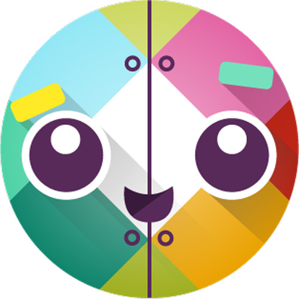

<div class="main-area-content much-text constrain codepen-please-hire-me-i-am-very-good">

	<div class="content-section">

		<div class="match-made-in-heaven">
			<span class="michael">
				
			</span>
			<span class="plus">
				<i class="fa fa-plus" aria-hidden="true"></i>
			</span>
			<span class="codepen-logo">
				{% include svg-codepen.html %}
			</span>
		</div>
		<div class="lil-seller">
			<p>Come on, it’ll be fun!</p>
		</div>

		<div class="reasons-im-a-fit">
			<h2>Quick intro <span class="emoji">👋</span></h2>
			<p>I’m Michael Edelstone, a designer living in San Marcos, Texas and currently leading product design initiatives at <a href="https://brickftp.com">BrickFTP</a>.</p>
			<p>I’m not the sort of person to randomly send out hundreds of generic resumes. I identify people and products I want to work with, and CodePen is right at the top of my list. I’ve been waiting for an opportunity to apply so I hope you enjoy.</p>
		</div>

		<div class="reasons-im-a-fit">
			<h2>Why am I a good fit? <span class="emoji">🤔</span></h2>
			<p>I like small teams confronting big initiatives. I’m also a well-rounded designer with expertise that matches the problems you’re trying to solve. For example...</p>
			<ol>
				<li><span class="inline-header">I’m versatile:</span> I love sweating over the details of a <a href="/portfolio/texas-state-homepage#mockups">responsive layout</a> or <a href="https://invis.io/PNC0MQOE5">UX interaction</a>, but I also have deep experience <a href="/portfolio/gato-cms#focus-groups">leading customer focus groups</a> and turning those insights into actionable reports and well-recieved outcomes.</li>
				<li><span class="inline-header">I make design systems:</span> I’m the architect of <a href="/portfolio/texas-state-brand">Texas State’s digital identity</a> and the <a href="https://actionverb.com/styleguide">Action Verb brand</a>. Though these serve mostly as retroactive documentation, I’d like to level up and create a living design system, much like you describe in your posting.</li>
				<li><span class="inline-header">I’m a natural communicator:</span> Coworkers consider me honest, humorous, and expertly prepared with <a href="https://i.giphy.com/media/l0He3TjUldAZ4IXdK/source.gif">inspirational GIFs</a>. I’m also an accomplished UX writer, authoring thousands of words across the BrickFTP interface and spearheading the <a href="https://headwayapp.co/brickftp-updates">app’s changelog</a>.</li>
				<li><span class="inline-header">I’m solid with frontend code: </span> I know it’s not a huge deal for you, but I figured I’d mention it. I commit directly to the BrickFTP React codebase daily, and that’s my HTML/CSS in production on <a href="http://txstate.edu">txstate.edu</a>, <a href="https://brickftp.com">brickftp.com</a>, and <a href="https://actionverb.com">actionverb.com</a>. I’m happily up-to-date on flexbox, CSS animations, a11y, Sass, BEM, and Git.</li>
				<li><span class="inline-header">I contribute to the culture: </span> I’m the type of person who adds custom emoji on Slack, celebrates my peers’ victories, and creates a team Spotify account when they don’t exist. I’m thoughtful and concerned about the welfare of my team – without being invasive.</li>
			</ol>
		</div>

		<div class="productivity stats">
			<h2 class="productivity-header constrain">My stats</h2>
			<div class="constrain multi-layout">
				<div class="col col-1 stack">
					<ul class="important-updates fa-ul">
						<li><i class="fa-li fa fa-check"></i><b>Digital designer</b> since 2009</li>
						<li><i class="fa-li fa fa-check"></i><b>Design or UX lead</b> for about four years</li>
						<li><i class="fa-li fa fa-check"></i><b>Broad skillset</b> spanning user research, design systems, UX writing, and code</li>
					</ul>
				</div>
				<div class="col col-2">
					<ul class="important-updates fa-ul">
						<li><i class="fa-li fa fa-check"></i><b><i class="fa fa-heart"></i> CodePen</b> and use it regularly</li>
						<li><i class="fa-li fa fa-check"></i><b>Conscientious</b>, capable, and fun</li>
						<li><i class="fa-li fa fa-check"></i><b>Remote friendly</b> and happy to visit you in Oregon anytime with <a href="https://photos.app.goo.gl/NgCfeXFpNXnYUSYD3">my dog Chloe</a></li>
					</ul>
				</div>
			</div>
		</div>

		<div class="reasons-im-a-fit">
			<h2>I’m also human <span class="emoji">👫</span></h2>
			<p>I’m proud of my career accomplishments, but I’m equally devoted to my growth as a human being. I recently lost 75 pounds, and I recharge via <a href="https://photos.app.goo.gl/ibakW6gsRauxRT9D3">epic bicycle adventures</a> and road trips with <a href="https://photos.app.goo.gl/NgCfeXFpNXnYUSYD3">my dog, Chloe</a>. I read a lot of books and articles and <a href="https://pinboard.in/u:tsanzer">bookmark my favorites</a>.</p>
			<p>I’m opinionated, but I want to change my mind.</p>
		</div>

		<div class="reasons-im-a-fit">
			<h2>Favorite tools <span class="emoji">🛠️</span></h2>
			<ul class="quick-list">
				<li><span class="inline-header">Visual design:</span> Sketch, Photoshop</li>
				<li><span class="inline-header">Interaction design:</span> Balsamiq, Invision, Zeplin, paper and pencil</li>
				<li><span class="inline-header">Data:</span> Google Analytics, HotJar, Optimal Workshop</li>
				<li><span class="inline-header">Code:</span> Chrome DevTools, GitHub, Atom</li>
				<li><span class="inline-header">Remote:</span> Slack, Zoom, Basecamp</li>
			</ul>
		</div>

		<div class="reasons-im-a-fit">
			<h2>What others are saying <span class="emoji">🙌</span></h2>
			<p>Don’t just take my word for it. Listen to the testimony of my industry peers:</p>
			<div class="constrain multi-layout-2 testimonials">
				<div class="col col-1">
					
					<h3>Jeff K.</h3>
					<h4>Coworker</h4>
					<p>“I think he worked on our website.”</p>
				</div>
				<div class="col col-2">
					
					<h3>Karyn M.</h3>
					<h4>Ex-girlfriend</h4>
					<p>“We still talk occasionally, when I have time.”</p>
				</div>
				<div class="col col-3">
					
					<h3>Slackbot</h3>
					<h4>Friend</h4>
					<p>“I’m afraid I don’t understand. I’m sorry.”</p>
				</div>
			</div>
		</div>

		<div class="reasons-im-a-fit">
			<h2>Check me out elsewhere <span class="emoji">😎</span></h2>
			<ul class="quick-list">
				<li><a href="https://codepen.io/edelstone">CodePen</a></li>
				<li><a href="https://github.com/edelstone">GitHub</a></li>
				<li><a href="https://linkedin.com/in/edelstone">LinkedIn</a></li>
				<li><a href="https://twitter.com/medelstone">Twitter</a></li>
				<li><a href="https://last.fm/user/tsanzer">LastFM</a></li>
			</ul>
		</div>

	</div> <!-- content-section -->

</div> <!-- main-area-content -->
